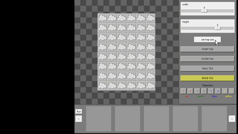
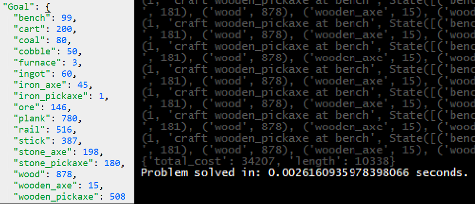
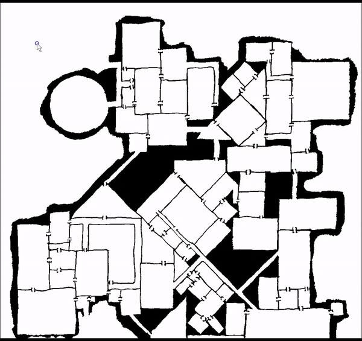

AI Projects (Python)
I studied Game AI at the University of California: Santa Cruz, a hotbed for AI pioneering. Here are some examples of work I did:
AI Assisted Puzzle Designer
A tool that allows the user to define a partial level, then generates a set of finished levels that fit the defined constraints.
Goal Regression Planning Algorithm
Given a goal state of items that need to be obtained, executes a reverse search from goal state using a set of crafting actions. With a set of 17 different craftable items and 25 different actions, algorithm is able to calculate the shortest series of actions to reach any goal state in less than 1/100 of a second.
Monte Carlo Tree Search
A bot that utilizes Monte Carlo Tree Search to select actions in a box making game.
Monte Carlo Tree Search Bot vs. Random Bot
Behavior Tree
Standard Behavior Tree architecture implemented to make a bot that plays Space Wars.

A* Pathfinding
Runs bidirectional A* to find the shortest path to a target.
